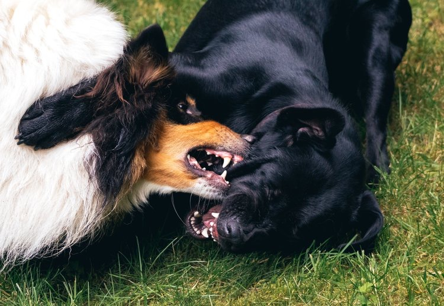

5 Signs Your Dog Needs Aggression Management Training

Most aggression cases don't start big. They start with small signals that get written off as "he's just excited" until the day it isn't. Here's what to watch for.
1. Freezing or hard staring before a reaction
A stiff body, a locked stare, or a closed mouth right before a lunge or bark is your dog's warning system. It's easy to miss because it looks calm.
2. Escalating leash reactivity
Barking or lunging at other dogs on leash tends to get worse, not better, without intervention. The behavior gets rehearsed every time it "works" to create distance.
3. Guarding food, toys, or spaces
Growling or snapping when approached near food, a bone, or a favorite spot is resource guarding, and it can generalize to other situations if left unaddressed.
4. Avoiding the dog park or walks altogether
If you've started planning routes to avoid other dogs, or skipping the dog park out of fear of a reaction, that avoidance is a sign the behavior has already become a real problem.
5. A bite or near-bite has already happened
Any bite, snap, or close call is worth addressing immediately with a professional, not managed around indefinitely.
What Aggression Management actually looks like
We start with an evaluation to understand your dog's specific triggers, whether that's other dogs, strangers, territory, or resource guarding. From there, we build a structured plan, often as part of our Intensive Behavior Modification program, focused on changing the underlying response, not just suppressing the symptom.